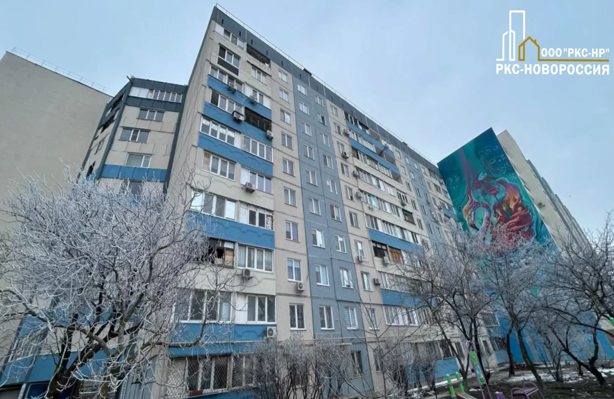

Компания ООО «РКС-НР» с привлечением подрядной организации ООО «Трансюжстрой» выполнила ремонт многоквартирного жилого дома на Харлампиевской улице в Мариуполе.
Он появился в 20–30-х годах прошлого века и давно стал частью архитектурного наследия Мариуполя. Когда-то на первом этаже кипела жизнь: работала парикмахерская, продавали свежий хлеб, можно было выбрать ткани, зайти в гастроном за покупками к ужину.
Во время недавних боевых действий дом серьёзно пострадал. Сквозные трещины, разрушенные внешние стены, обрушенные перегородки, деформированные вследствие пожара перекрытия… С точки зрения «проще и быстрее» логичен был снос здания и восстановление его с нулевого цикла.
Но стояла задача сохранить. В 2023 году компания «РКС-НР» передала объект в работу подрядчику ООО «Трансюжстрой».
Представитель подрядчика так рассказал нам о решении восстанавливать дом: «Хочется отметить, что данный дом выстоял при Великой Отечественной войне, и это стало ещё большим стимулом для того, чтобы его не снесли. Мы более детально проработали все этапы восстановления, разработали узлы усиления и восстановления конструктивных элементов. В целом при восстановлении дома возникали сложности разного характера. Для нас это стало вызовом и возможностью показать новые результаты».
Строители восстановили конструктив здания, отремонтировали кровлю. Заменили оконные и дверные блоки. Восстановлена работа инженерных систем, включая центральное отопление, холодное водоснабжение, канализацию и электроснабжение. Произведен капитальный ремонт мест общего пользования и фасада дома.
Благодаря сложной, поэтапной работе по спасению здания, мы можем наблюдать результат не просто восстановления дома, а уважение к городу и его истории.
Дом на Харлампиевской пережил войну в середине прошлого века.
Пережил и нынешние тяжёлые события. Сегодня он снова стоит обновлённый, усиленный, но всё такой же узнаваемый.